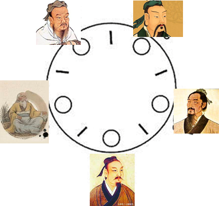

哲学家就餐问题是一个非常非常经典的问题，也是一个非常通用的研究并发编程中死锁现象的问题。
为什么我们要研究经典的并发问题呢？这些经典问题是对现实中的计算机编程的抽象，代表了非常通用的计算机并发问题，计算机科学家对此进行了深入的研究，也总结出很多行之有效的解决办法。我们通过学习这些经典问题，可以将我们遇到的并发问题做对比，看不看是否是类似的问题，如何是相同的问题，可以使用前人总结的解决方案去解决。同时练习解决这些问题，也可以使我们学习和掌握并发原语和解决问题的技巧，举一反三去解决更多的并发问题。
在1971年，著名的计算机科学家艾兹格·迪科斯彻(Edsger Dijkstra)提出了一个同步问题，即假设有五台计算机都试图访问五份共享的磁带驱动器。稍后，这个问题被托尼·霍尔(Tony Hoare)重新表述为哲学家就餐问题。这个问题可以用来解释死锁和资源耗尽。
到了中国，哲学家就餐问题可以这样表述，假设因为新冠的原因，五位哲学家被隔离在一个房间里。这五位哲学家分别是孔子、庄子、墨子、孙子和老子，他们围坐在一个圆形的餐桌旁，餐桌上有无尽的可口的饭菜，不幸的是，出于环保的原因，只有五根筷子，每根筷子都位于两位哲学家之间。哲学家吃饭时，必须拿起自己左右两边的两根筷子才能吃饭，吃完饭后才放回筷子，这样其它哲学家可以再拿起筷子。
虽然隔离的日子比较寂寞，但是这些哲学家还是有事情可做，他们不断的冥想或者吃饭。饿了的时候就开始尝试拿起筷子，吃随机时间的饭菜，然后放下筷子开始冥想。冥想一段时间就饿了，又开始吃饭。所以他们总是处于冥想-饿了-吃饭-冥想这样的状态中。

这个哲学家很好的模拟了计算机并发编程中一定数量的资源和一定数量的持有者的并发问题，这类问题很大的一个问题就是死锁问题。
如果五位哲学家同时饿了，同时拿起左手边的那根筷子，你就会发现他们想去拿右边的筷子的时候，都没有办法拿起右边的筷子，因为右边那根筷子都被旁边的哲学家拿走了，所有的哲学家都处于等待状态而没有办法继续下去。对于程序来说，就是程序 hang死了，没有办法继续处理。
如果这五位哲学家同时发现没有右边的筷子可用，他们同时放下左手的筷子，冥想5分钟再同时就餐，你会发现程序貌似还在进行，但是哲学家依然还是没有办法就餐，这种现象叫做死锁。在分布式一致性算法中在选主的时候也会有类似的现象，有些实现是通过随机休眠一定的时间，避免各个节点同时请求选主来避免。
如果系统中只有一个线程，当然不会产生死锁。如果每个线程仅需求一种并发资源，也不会产生死锁。不过这只是理想状态，在现实中是可遇不可求的。如果你搜索Go官方的项目中的issue,可以看到几百个关于死锁的issue,足可以表明死锁是一个常见且并不容易处理的bug。
死锁的四个条件是：
禁止抢占（no preemption）：系统资源不能被强制从一个线程中退出。如果哲学家可以抢夺，那么大家都去抢别人的筷子，也会打破死锁的局面，但这是有风险的，因为可能孔子还没吃饭就被老子抢走了。计算机资源如果不是主动释放而是被抢夺有可能出现意想不到的现象。
持有和等待（hold and wait）：一个线程在等待时持有并发资源。持有并发资源并还等待其它资源，也就是吃着碗里的望着锅里的。
互斥（mutual exclusion）：资源只能同时分配给一个线程，无法多个线程共享。资源具有排他性，孔子和老子的关系再好，也不允许他们俩一起拿着一根筷同时吃。
循环等待（circular waiting）：一系列线程互相持有其他进程所需要的资源。必须有一个循环依赖的关系。
死锁只有在四个条件同时满足时发生，预防死锁必须至少破坏其中一项。
模拟哲学家就餐问题
首先我们通过程序模拟哲学家就餐问题，看看程序在运行的是不是会产生死锁问题。
首先我们定义筷子对象和哲学家对象。其中筷子是并发资源，具有排他性，所以它包含一个锁，用来实现互斥，并且禁止抢占(其它非持有这根筷子的哲学家不能调用Unlock,只有持有这根筷子的哲学家才能调用Unlock)。
每个哲学家需要左手的筷子和右手的筷子，status代表哲学家的状态(冥想、饿了、就餐中)，他有一种状态就是持有一根筷子并请求另一根筷子。
1 2 3 4 5 6 7 8 9 10 11
| type Chopstick struct{ sync.Mutex } type Philosopher struct { name string leftChopstick, rightChopstick *Chopstick status string }
|
哲学家在隔离的房间就是不断的冥想、就餐、冥想、就餐...... 永无终日。
1 2 3 4 5 6 7 8 9 10 11 12 13 14 15 16 17 18 19 20 21 22 23 24 25 26 27 28 29 30 31
| func (p *Philosopher) dine() { for { mark(p, "冥想") randomPause(10) mark(p, "饿了") p.leftChopstick.Lock() mark(p, "拿起左手筷子") p.rightChopstick.Lock() mark(p, "用膳") randomPause(10) p.rightChopstick.Unlock() p.leftChopstick.Unlock() } } func randomPause(max int) { time.Sleep(time.Millisecond * time.Duration(rand.Intn(max))) } func mark(p *Philosopher, action string) { fmt.Printf("%s开始%s\n", p.name, action) p.status = fmt.Sprintf("%s开始%s\n", p.name, action) }
|
这里的mark用来在控制台输出此哲学家的状态，便于我们观察。
最后一步就是实现main函数，分配5根筷子和五个哲学家，让程序运行起来:
1 2 3 4 5 6 7 8 9 10 11 12 13 14 15 16 17 18 19 20 21 22 23 24 25 26 27 28 29 30 31 32 33
| func main() { go http.ListenAndServe("localhost:8972", nil) count := 5 chopsticks := make([]*Chopstick, count) for i := 0; i < count; i++ { chopsticks[i] = new(Chopstick) } names := []string{color.RedString("孔子"), color.MagentaString("庄子"), color.CyanString("墨子"), color.GreenString("孙子"), color.WhiteString("老子")} philosophers := make([]*Philosopher, count) for i := 0; i < count; i++ { philosophers[i] = &Philosopher{ name: names[i], leftChopstick: chopsticks[i], rightChopstick: chopsticks[(i+1)%count], } go philosophers[i].dine() } sigs := make(chan os.Signal, 1) signal.Notify(sigs, syscall.SIGINT, syscall.SIGTERM) <-sigs fmt.Println("退出中... 每个哲学家的状态:") for _, p := range philosophers { fmt.Print(p.status) } }
|
运行这个程序你会很快就发现这个程序会hang住，每个哲学家都处于拿到左手筷子等待右手筷子的状态。
在我们实际的应用中，死锁问题并不是这么容易的被发现的，很可能在一些非常特定的场景(也被称之为corner case)才会被触发和发现。
解法一：限制就餐人数
我们知道，解决死锁的问题就是破坏死锁形成的四个条件之一就可以。一般来说，禁止抢占和互斥是我们必须的条件，所以其它两个条件是我们重点突破的点。
针对哲学家就餐问题，如果我们限制最多允许四位哲学家同时就餐，就可以避免循环依赖的条件，因为依照抽屉原理，总是会有一位哲学家可以拿到两根筷子，所以程序可以运行下去。
针对限制特定数量资源的情况，最好用的并发原语就是信号量(Semaphore)。Go官方提供了一个扩展库，提供了一个Semaphore的实现：semaphore/Weighted。
我们把这个信号量初始值设置为4，代表最多允许同时4位哲学家就餐。把这个信号量传给哲学家对象，哲学家想就餐时就请求这个信号量，如果能得到一个许可，就可以就餐，吃完把许可释放回给信号量。
1 2 3 4 5 6 7 8 9 10 11 12 13 14 15 16 17 18 19 20 21 22 23 24 25 26 27 28 29 30 31 32 33 34 35 36 37 38 39 40 41 42 43 44 45 46 47 48 49 50 51 52 53 54 55
| type Philosopher struct { name string leftChopstick, rightChopstick *Chopstick status string sema *semaphore.Weighted } func (p *Philosopher) dine() { for { mark(p, "冥想") randomPause(10) mark(p, "饿了") p.sema.Acquire(context.Background(), 1) p.leftChopstick.Lock() mark(p, "拿起左手筷子") p.rightChopstick.Lock() mark(p, "用膳") randomPause(10) p.rightChopstick.Unlock() p.leftChopstick.Unlock() p.sema.Release(1) } } func main() { ...... sema := semaphore.NewWeighted(4) names := []string{color.RedString("孔子"), color.MagentaString("庄子"), color.CyanString("墨子"), color.GreenString("孙子"), color.WhiteString("老子")} philosophers := make([]*Philosopher, count) for i := 0; i < count; i++ { philosophers[i] = &Philosopher{ name: names[i], leftChopstick: chopsticks[i], rightChopstick: chopsticks[(i+1)%count], sema: sema, } go philosophers[i].dine() } ...... }
|
你可以运行这个程序，看看是否程序是否还会被hang住。
解法二：奇偶资源
我们给每一位哲学家编号，从1到5, 如果我们规定奇数号的哲学家首先拿左手边的筷子，再拿右手边的筷子，偶数号的哲学家先拿右手边的筷子，再拿左手边的筷子， 释放筷子的时候按照相反的顺序，这样也可以避免出现循环依赖的情况。
1 2 3 4 5 6 7 8 9 10 11 12 13 14 15 16 17 18 19 20 21 22 23 24 25 26 27 28 29 30 31 32 33 34 35 36 37 38 39 40 41 42 43 44 45 46 47 48 49 50
| func (p *Philosopher) dine() { for { mark(p, "冥想") randomPause(10) mark(p, "饿了") if p.ID%2 == 1 { p.leftChopstick.Lock() mark(p, "拿起左手筷子") p.rightChopstick.Lock() mark(p, "用膳") randomPause(10) p.rightChopstick.Unlock() p.leftChopstick.Unlock() } else { p.rightChopstick.Lock() mark(p, "拿起右手筷子") p.leftChopstick.Lock() mark(p, "用膳") randomPause(10) p.leftChopstick.Unlock() p.rightChopstick.Unlock() } } } func main() { ...... philosophers := make([]*Philosopher, count) for i := 0; i < count; i++ { philosophers[i] = &Philosopher{ ID: i + 1, name: names[i], leftChopstick: chopsticks[i], rightChopstick: chopsticks[(i+1)%count], } go philosophers[i].dine() } ...... }
|
运行这个程序，你同样也会发现程序可以顺利执行下去，并不会出现死锁的现象。
解法三：资源分级
另一个简单的解法是为资源（这里是筷子）分配一个偏序或者分级的关系，并约定所有资源都按照这种顺序获取，按相反顺序释放，而且保证不会有两个无关资源同时被同一项工作所需要。在哲学家就餐问题中，筷子按照某种规则编号为1至5，每一个工作单元（哲学家）总是先拿起左右两边编号较低的筷子，再拿编号较高的。用完筷子后，他总是先放下编号较高的筷子，再放下编号较低的。在这种情况下，当四位哲学家同时拿起他们手边编号较低的筷子时，只有编号最高的筷子留在桌上，从而第五位哲学家就不能使用任何一只筷子了。而且，只有一位哲学家能使用最高编号的筷子，所以他能使用两只筷子用餐。当他吃完后，他会先放下编号最高的筷子，再放下编号较低的筷子，从而让另一位哲学家拿起后边的这只开始吃东西。
1 2 3 4 5 6 7 8 9 10 11 12 13 14 15 16 17 18 19 20 21 22 23 24 25 26 27 28 29 30 31 32 33
| func (p *Philosopher) dine() { for { mark(p, "冥想") randomPause(10) mark(p, "饿了") if p.ID == 5 { p.rightChopstick.Lock() mark(p, "拿起左手筷子") p.leftChopstick.Lock() mark(p, "用膳") randomPause(10) p.leftChopstick.Unlock() p.rightChopstick.Unlock() } else { p.leftChopstick.Lock() mark(p, "拿起右手筷子") p.rightChopstick.Lock() mark(p, "用膳") randomPause(10) p.rightChopstick.Unlock() p.leftChopstick.Unlock() } } }
|
解法四：引入服务生
如果我们引入一个服务生，比如韩非子，由韩非子负责分配筷子，这样我们就可以将拿左手筷子和右手筷子看成一个原子操作，要么拿到筷子，要么等待，就可以破坏死锁的第二个条件(持有和等待)。
1 2 3 4 5 6 7 8 9 10 11 12 13 14 15 16 17 18 19 20 21 22 23 24 25 26 27 28 29 30 31 32
| type Philosopher struct { name string leftChopstick, rightChopstick *Chopstick status string mu *sync.Mutex } func (p *Philosopher) dine() { for { mark(p, "冥想") randomPause(10) mark(p, "饿了") p.mu.Lock() p.leftChopstick.Lock() mark(p, "拿起左手筷子") p.rightChopstick.Lock() p.mu.Unlock() mark(p, "用膳") randomPause(10) p.rightChopstick.Unlock() p.leftChopstick.Unlock() } }
|
完整代码可以参考 [dive-to-gosync-workshop(https://github.com/smallnest/dive-to-gosync-workshop/tree/master/11.classical_problems)
下一篇我们讲解另外一个经典并发问题：一氧化二氢的生成。